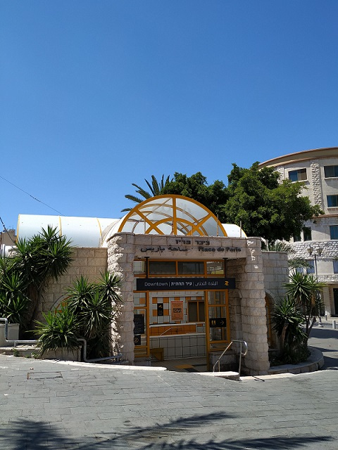
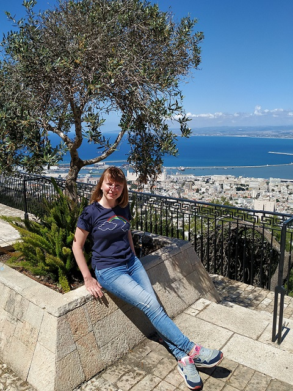
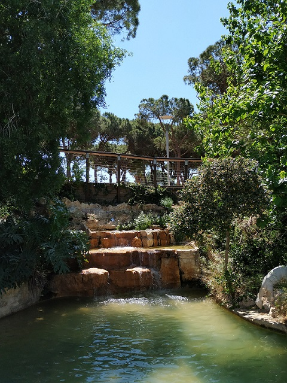
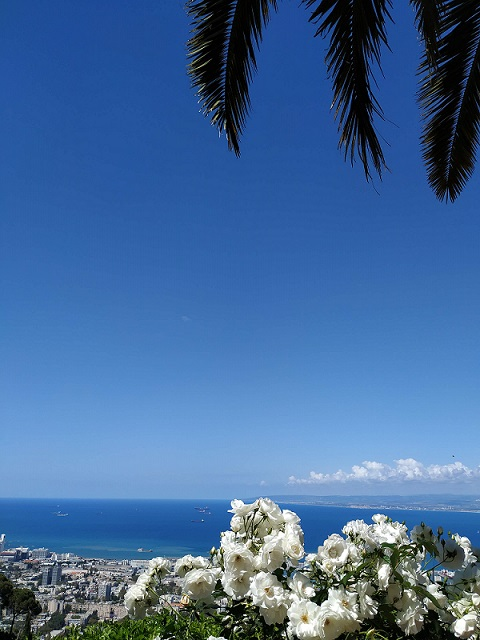
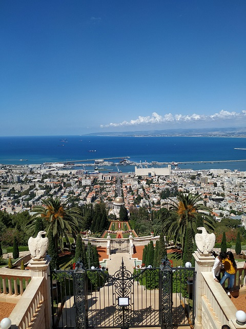
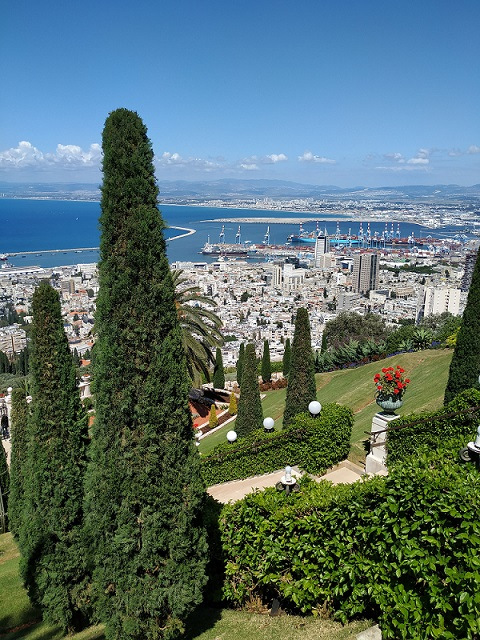
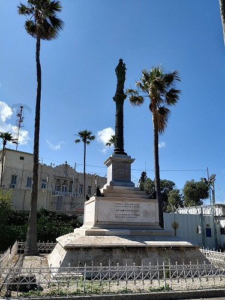
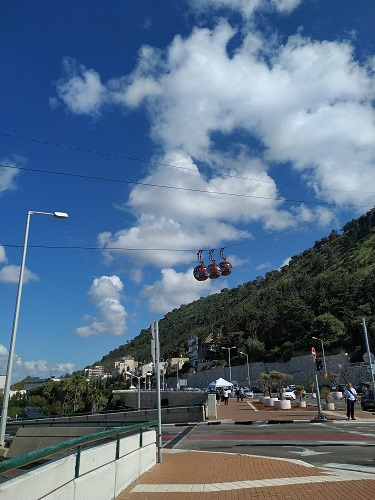
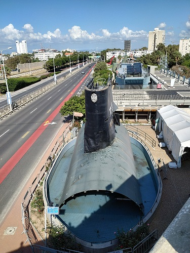

Travel inside a forein country by ourselves is always interesting and thrilling. It's a greate opportunity to see pieces of usuall life of locals, the difference in nature and buildings. We had already used a train by that time, so easily came by foot to the train station Ha Hagana in Tel Aviv, bought two tickets to Haifa and a sandwich for Kostia.
As soon as we arrived, we went to a lift station (or it was a metro station) for getting to The Bahai Gardens. The view from a hill was amasing, it's worth to visit Haifa only for this view. Surprisingly there were a lot of Russians, who chosen to get an Israel citizenship.



We knew that the garden would be closed, so went only on a first, the topmost platform. Despite the fact that it is a garden, I think the way through it could be quite harsh because there would be a lot of stairs and almost no shadow.



Our way down wasn't less interesting. We had an appointment with a friend and walked with pleasure in different places where he and his family lived a lot of years ago.



Summaries:
1 – Haifa is worth to visit, but I wouldn't chose this spot for a two week vacation. Beach is better in Tel Aviv and, of course, a night life too.
2 – The Bahai Gardens are must for visiting. They have a convinient site where opening hours are described.
3 – The Baha'i Faith is quite interesting and unusual. I recommend to read about it before visiting gardens.